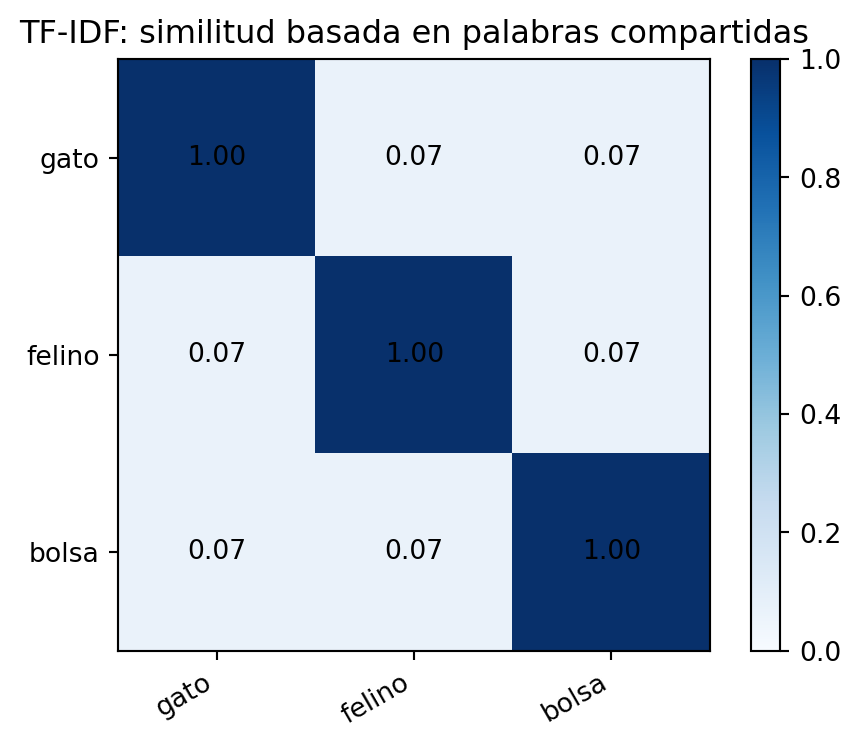

flowchart LR
A[Texto humano]:::input --> B[Representación numérica]:::proc
B --> C[Espacio de similitud]:::doc
C --> D[Búsqueda y recuperación]:::proc
C --> E[Clasificación o predicción]:::proc
B --> F[Modelo generativo]:::proc
D --> G[RAG]:::out
F --> H[Agentes y herramientas]:::out
classDef input fill:#4B8BBE,stroke:#1e3a5f,color:#fff,stroke-width:1.5px
classDef proc fill:#306998,stroke:#0d1f33,color:#fff,stroke-width:1.5px
classDef doc fill:#FFD43B,stroke:#b8860b,color:#000,stroke-width:1.5px
classDef out fill:#2e7d32,stroke:#0d3010,color:#fff,stroke-width:2px
00 - Panorama histórico: del texto a los embeddings

Propósito: ofrecer un mapa histórico y conceptual antes de entrar en la arquitectura de los modelos actuales.
Esta página no sustituye ninguno de los contenidos del Bloque 1. Sirve para entender por qué aparecen los embeddings, qué problema resuelven y cómo se relacionan con los LLM y los sistemas RAG.
TipIdea guía
Un sistema de IA no puede trabajar directamente con el significado humano de una frase. Necesita una representación que pueda comparar, transformar y utilizar para predecir. La historia que conduce a los modelos actuales es, en buena medida, la historia de mejorar esa representación.
Objetivos de esta introducción
Al terminar este panorama deberías poder:
- Explicar por qué una palabra, una frase o un documento necesitan convertirse en números
- Distinguir representaciones dispersas de representaciones densas
- Diferenciar un embedding de entrada, un estado oculto contextual y un embedding de frase
- Describir qué aportan word2vec, BERT, SBERT y E5 en la evolución de las representaciones
- Relacionar embeddings, búsqueda vectorial y RAG con la generación de texto de un LLM
- Entender que la historia de las representaciones y la historia de la generación son dos líneas relacionadas, pero no idénticas
El problema: el texto no es todavía una geometría
Para una persona, estas frases están claramente relacionadas:
El gato duerme sobre la alfombra.
Un felino descansa en la moqueta.
La bolsa europea cerró al alza.La primera y la segunda expresan una situación parecida aunque apenas compartan palabras. La tercera pertenece a otro tema. Un sistema de búsqueda basado exclusivamente en coincidencia literal puede tener dificultades para distinguir estas relaciones.
El problema general puede formularse así:
¿Cómo convertimos objetos complejos, como palabras, frases, imágenes o filas tabulares, en puntos de un espacio donde la cercanía tenga un significado útil?
La respuesta ha ido cambiando con el tiempo. Primero se contaban palabras. Después se aprendían vectores. Más tarde se incorporó el contexto. Finalmente se aprendió a producir representaciones directamente optimizadas para comparar frases, recuperar documentos o alinear modalidades.
Figura 1 resume el hilo conductor del módulo: una representación numérica puede servir para recuperar información o para alimentar un modelo que genera una salida. Los embeddings son especialmente importantes en la primera rama, aunque también aparecen dentro de los propios LLM.
Dos historias que se encuentran
La evolución de la IA generativa no es una única escalera. Hay dos líneas históricas que terminan combinándose en los sistemas actuales.
Línea A: representar significado
one-hot -> Bag of Words / TF-IDF -> word2vec y GloVe
-> representaciones contextuales -> SBERT y E5
-> vector DB -> recuperación semántica -> RAGEsta línea intenta que textos relacionados ocupen posiciones próximas en un espacio vectorial. Su pregunta principal es: ¿qué objetos son semánticamente parecidos o relevantes para una consulta?
Línea B: generar lenguaje
modelos simbolicos -> RNN / LSTM -> Transformer
-> preentrenamiento causal -> LLM
-> instrucciones -> herramientas -> agentesEsta línea intenta modelar una distribución de probabilidad para producir el siguiente token y, a partir de esa operación repetida, generar texto. Su pregunta principal es: ¿qué token puede venir a continuación dado el contexto?
El Transformer es un punto de encuentro, no el origen de toda la historia de los embeddings. Los embeddings de palabras son anteriores al Transformer; los embeddings de frases modernos se benefician de encoders Transformer y de objetivos contrastivos.
Primera etapa: representar símbolos
One-hot encoding
La representación más directa asigna una posición del vector a cada elemento del vocabulario. Si el vocabulario contiene cinco palabras, una palabra puede representarse así:
| Palabra | Vector one-hot |
|---|---|
| gato | [1, 0, 0, 0, 0] |
| perro | [0, 1, 0, 0, 0] |
| duerme | [0, 0, 1, 0, 0] |
| alfombra | [0, 0, 0, 1, 0] |
| bolsa | [0, 0, 0, 0, 1] |
Esta representación permite identificar símbolos, pero no expresa relaciones semánticas. La distancia entre gato y perro es la misma que entre gato y bolsa. Además, el vector crece con el tamaño del vocabulario y contiene casi todos ceros.
Bag of Words
Una representación Bag of Words resume un documento contando cuántas veces aparece cada palabra. Pierde el orden, pero permite trabajar con documentos completos:
"gato duerme gato"
-> gato: 2, duerme: 1, perro: 0, bolsa: 0Su virtud fue convertir colecciones de documentos en matrices que podían analizarse con álgebra lineal y estadística. Su limitación es que trata las palabras como elementos independientes: gato y felino no tienen ninguna relación si no se introduce información adicional.
TF-IDF: dar más peso a lo informativo
TF-IDF combina dos ideas:
- TF: Frecuencia de un término dentro de un documento
- IDF: Rareza del término dentro de la colección completa
Una forma habitual de escribirlo es:
\[ \operatorname{tfidf}(t,d) = \operatorname{tf}(t,d) \, \log\left(\frac{N}{\operatorname{df}(t)}\right), \]
donde \(N\) es el número de documentos y \(\operatorname{df}(t)\) el número de documentos que contienen el término \(t\) (Salton & Buckley, 1988).
TF-IDF mejora la representación porque reduce el peso de palabras que aparecen en todos los documentos y resalta términos característicos. Sin embargo, sigue basándose principalmente en coincidencia léxica.
AdvertenciaLo que TF-IDF no sabe
Para TF-IDF, vehículo, coche y automóvil son columnas distintas. Si una consulta usa una palabra y el documento usa otra, la similitud puede ser baja aunque el significado sea cercano. Esta limitación motiva la búsqueda de representaciones distribucionales.
Segunda etapa: aprender del contexto
La hipótesis distribucional de la lingüística propone que las palabras que aparecen en contextos parecidos tienden a tener significados parecidos. Firth lo resumió en una frase que se convirtió en una referencia del área:
“You shall know a word by the company it keeps” (Firth, 1957).
En lugar de asignar manualmente propiedades a cada palabra, podemos observar grandes cantidades de texto y construir una matriz de coocurrencias:
| come | duerme | parque | mercado | |
|---|---|---|---|---|
| gato | 12 | 20 | 8 | 0 |
| perro | 18 | 15 | 25 | 0 |
| coche | 0 | 0 | 2 | 28 |
| automóvil | 0 | 0 | 1 | 24 |
En un espacio así, gato y perro pueden tener perfiles parecidos aunque no sean el mismo símbolo. La matriz completa suele ser enorme y dispersa, por lo que el siguiente paso consistió en aprender representaciones densas y compactas.
Tercera etapa: embeddings densos de palabras
El salto de Bengio a word2vec y GloVe
Los primeros modelos neuronales de lenguaje ya utilizaban una tabla de vectores aprendidos para representar palabras. El trabajo de Bengio et al. mostró cómo aprender conjuntamente una representación distribuida de las palabras y un modelo probabilístico del lenguaje (Bengio et al., 2003).
Con word2vec, la idea se volvió especialmente accesible y eficiente (Mikolov et al., 2013). Sus dos objetivos más conocidos son:
- CBOW: Predecir una palabra a partir de las palabras que la rodean
- Skip-gram: Predecir palabras de contexto a partir de una palabra central
En los dos casos, la tabla de parámetros aprendida se interpreta como un espacio vectorial de palabras. GloVe siguió una estrategia relacionada, pero utilizó estadísticas globales de coocurrencia (Pennington et al., 2014).
Qué se consiguió
Los vectores densos permitieron que varias regularidades lingüísticas aparecieran como relaciones geométricas:
vector(king) - vector(man) + vector(woman) ≈ vector(queen)Esta operación no debe entenderse como una regla lógica garantizada. Es una ilustración de que el entrenamiento puede organizar determinadas relaciones en direcciones del espacio.
Los embeddings estáticos también hicieron posible:
- Calcular similitud entre palabras
- Agrupar vocabulario por significado o uso
- Alimentar clasificadores con menos dimensiones que una representación one-hot
- Transferir información aprendida a tareas con pocos datos
La limitación: un vector por palabra
Un embedding estático asigna un vector fijo a cada palabra. Por ello, las dos apariciones siguientes tendrían esencialmente la misma representación inicial:
El banco concedió un préstamo.
Me senté en el banco del parque.El significado correcto depende del contexto. La evolución siguiente no consistió solamente en hacer vectores más grandes, sino en hacer que la representación dependiera de los tokens que rodean a cada palabra.
Cuarta etapa: representaciones contextuales
RNN, LSTM y ELMo
Las redes recurrentes procesaban una secuencia manteniendo un estado oculto que se actualizaba paso a paso. Esto permitía incorporar contexto, pero dificultaba el paralelismo y la relación entre posiciones muy alejadas.
ELMo produjo representaciones contextuales a partir de modelos de lenguaje bidireccionales (Peters et al., 2018). La misma palabra podía recibir vectores distintos según la frase en la que apareciera. Esto supuso un cambio conceptual importante:
embedding estático: palabra -> vector fijo
embedding contextual: palabra + contexto -> vector dependiente de la fraseTransformer y BERT
El Transformer sustituyó la recurrencia por atención, permitiendo que cada posición consultara otras posiciones de la secuencia y que el entrenamiento aprovechara un alto grado de paralelismo (Vaswani et al., 2017). La arquitectura se estudia en 01a - Arquitectura Transformer.
BERT utilizó un encoder Transformer bidireccional y un objetivo de modelado enmascarado para construir representaciones ricas del contexto (Devlin et al., 2019). El mismo backbone podía adaptarse después a clasificación, reconocimiento de entidades, similitud o extracción de características.
Es importante separar tres ideas que suelen mezclarse:
| Idea | Qué representa | Ejemplo |
|---|---|---|
| Embedding de token | Vector inicial asociado a un ID del vocabulario | La fila correspondiente a gato en una tabla nn.Embedding |
| Estado oculto contextual | Vector transformado por las capas del modelo y dependiente del contexto | La representación de banco en una frase concreta |
| Embedding de frase | Vector fijo que resume una frase para compararla con otra | La salida de SBERT o E5 |
El embedding de token aparece al principio del recorrido del Transformer. El estado oculto aparece después de procesar el contexto. El embedding de frase se obtiene aplicando una estrategia de pooling y, normalmente, un entrenamiento específico para que la similitud geométrica sea útil.
Quinta etapa: de palabras a frases y documentos
El problema de reutilizar BERT directamente
BERT produce estados contextuales por token, pero no fue diseñado automáticamente para que dos frases completas pudieran compararse mediante una sola distancia coseno. Una solución ingenua sería pasar cada frase por BERT y hacer pooling, pero la geometría resultante no siempre queda bien calibrada para búsqueda semántica.
Sentence-BERT
Sentence-BERT introdujo una arquitectura siamesa con pesos compartidos y objetivos de similitud para obtener embeddings de frases comparables de manera eficiente (Reimers & Gurevych, 2019). Durante la inferencia:
- Se codifica cada documento una sola vez
- Se guarda su vector
- Se codifica la consulta
- Se buscan los vectores más cercanos
Esta separación entre codificación e indexación hace que la búsqueda semántica sea práctica sobre colecciones grandes.
E5 y el aprendizaje contrastivo
Los modelos E5 utilizan preentrenamiento contrastivo débilmente supervisado para alinear consultas y pasajes en un espacio compartido (Wang et al., 2022). La idea general del aprendizaje contrastivo es acercar pares relevantes y separar pares no relevantes.
Para una consulta \(q\), un pasaje positivo \(p^+\) y pasajes negativos \(p^-\), el objetivo busca que:
\[ \operatorname{sim}(q,p^+) > \operatorname{sim}(q,p^-). \]
En la práctica, la calidad no depende únicamente de la arquitectura. También importan:
- El corpus de preentrenamiento
- El idioma y el dominio
- El tipo de pares positivos y negativos
- La función de similitud
- La normalización y la estrategia de pooling
- La evaluación sobre consultas reales
Sexta etapa: del espacio semántico a la recuperación
Cuando cada documento y cada consulta se representan con un vector, el problema de recuperar información puede expresarse como una búsqueda de vecinos:
consulta -> embedding de consulta
documentos -> embeddings de documentos
|
v
distancia o similitud
|
v
top-k documentos relevantesPara pocos documentos se puede comparar la consulta con todos los vectores. Para colecciones grandes aparecen índices de vecinos más próximos aproximados, como HNSW o IVF. Este paso se desarrolla en 01d - Bases de Datos Vectoriales.
La recuperación densa también se convirtió en un componente de los sistemas RAG. DPR mostró cómo utilizar representaciones densas para recuperar pasajes relevantes (Karpukhin et al., 2020), y RAG combinó un recuperador con un generador para responder preguntas apoyándose en documentos externos (Lewis et al., 2020).
flowchart TD
A[One-hot y simbolos]:::input --> B[BoW y TF-IDF]:::proc
B --> C[Coocurrencias y semántica distribucional]:::proc
C --> D[Word2vec y GloVe]:::doc
D --> E[ELMo y representaciones contextuales]:::doc
E --> F[Transformer y BERT]:::proc
F --> G[SBERT y embeddings de frase]:::out
G --> H[E5 y recuperación densa]:::out
H --> I[Vector DB y RAG]:::out
classDef input fill:#4B8BBE,stroke:#1e3a5f,color:#fff,stroke-width:1.5px
classDef proc fill:#306998,stroke:#0d1f33,color:#fff,stroke-width:1.5px
classDef doc fill:#FFD43B,stroke:#b8860b,color:#000,stroke-width:1.5px
classDef out fill:#2e7d32,stroke:#0d3010,color:#fff,stroke-width:2px
Figura 2 no representa una sustitución total de una técnica por la siguiente. Las representaciones dispersas siguen siendo útiles para interpretabilidad y recuperación léxica; los embeddings densos pueden combinarse con índices híbridos; y los LLM modernos continúan utilizando tablas de embeddings de tokens internamente.
Qué ocurre dentro de un LLM actual
El recorrido de un LLM decoder-only puede resumirse así:
texto -> tokens -> IDs -> embeddings de token
-> capas Transformer -> estados ocultos
-> LM head -> logits -> siguiente tokenLos embeddings de token son una pieza interna del modelo generativo, pero no son idénticos a los embeddings de frases que se usan para búsqueda semántica. Un modelo generativo puede producir buenos textos y no ser el mejor modelo para recuperar documentos. Del mismo modo, un modelo de embeddings puede ser excelente para similitud y no estar diseñado para generar respuestas.
La página Del estado oculto a la salida (Bloque 3) amplía la relación entre backbone, estados ocultos y cabezas de salida. La página 01b - LLM e inferencia explica la tokenización y la predicción del siguiente token.
Demostración: coincidencia literal frente a similitud semántica
Antes de ejecutar, predice: ¿qué similitud esperas entre la frase del gato y la del felino con TF-IDF: alta, media o casi cero? La siguiente demostración utiliza únicamente TF-IDF para hacer visible el problema de la coincidencia léxica. La frase sobre el felino y la frase sobre el gato hablan de una situación similar, pero no comparten exactamente todas sus palabras.
from sklearn.feature_extraction.text import TfidfVectorizer
from sklearn.metrics.pairwise import cosine_similarity
import matplotlib.pyplot as plt
import numpy as np
frases = [
"El gato duerme sobre la alfombra.",
"Un felino descansa en la moqueta.",
"La bolsa europea cerró al alza.",
]
vectorizer = TfidfVectorizer(lowercase=True, strip_accents="unicode")
X = vectorizer.fit_transform(frases)
similitud_tfidf = cosine_similarity(X)
print("Vocabulario aprendido por TF-IDF:")
print(sorted(vectorizer.vocabulary_))
print("\nMatriz de similitud TF-IDF:")
print(np.round(similitud_tfidf, 3))
fig, ax = plt.subplots(figsize=(5, 4))
im = ax.imshow(similitud_tfidf, cmap="Blues", vmin=0, vmax=1)
ax.set_title("TF-IDF: similitud basada en palabras compartidas")
ax.set_xticks(range(len(frases)))
ax.set_yticks(range(len(frases)))
ax.set_xticklabels(["gato", "felino", "bolsa"], rotation=30, ha="right")
ax.set_yticklabels(["gato", "felino", "bolsa"])
for i in range(len(frases)):
for j in range(len(frases)):
ax.text(j, i, f"{similitud_tfidf[i, j]:.2f}", ha="center", va="center")
fig.colorbar(im, ax=ax)
plt.tight_layout()
plt.show()
plt.close(fig)Vocabulario aprendido por TF-IDF:
['al', 'alfombra', 'alza', 'bolsa', 'cerro', 'descansa', 'duerme', 'el', 'en', 'europea', 'felino', 'gato', 'la', 'moqueta', 'sobre', 'un']
Matriz de similitud TF-IDF:
[[1. 0.065 0.065]
[0.065 1. 0.065]
[0.065 0.065 1. ]]
En una segunda ejecución, puedes sustituir TF-IDF por un encoder de frases. Para texto en español conviene utilizar un modelo multilingüe y respetar el formato de consulta que indique su documentación:
!pip install -q sentence-transformers
from sentence_transformers import SentenceTransformer
from sklearn.metrics.pairwise import cosine_similarity
import numpy as np
model = SentenceTransformer("intfloat/multilingual-e5-small")
consultas = [
"query: El gato duerme sobre la alfombra.",
"query: Un felino descansa en la moqueta.",
"query: La bolsa europea cerró al alza.",
]
embeddings = model.encode(consultas, normalize_embeddings=True)
similitud_embeddings = cosine_similarity(embeddings)
print(np.round(similitud_embeddings, 3))La comparación no significa que los embeddings siempre sean mejores. TF-IDF puede ser preferible cuando las coincidencias exactas son importantes, cuando se necesita explicar por qué se recuperó un documento o cuando el corpus tiene vocabulario muy específico. En producción es frecuente combinar recuperación léxica y densa.
La idea que conviene conservar
La evolución completa puede resumirse en cuatro preguntas:
| Pregunta | Respuesta histórica |
|---|---|
| ¿Cómo identifico símbolos? | One-hot y vocabularios |
| ¿Cómo cuento qué aparece en un documento? | Bag of Words y TF-IDF |
| ¿Cómo aprendo relaciones entre palabras? | Coocurrencias y embeddings estáticos |
| ¿Cómo incorporo contexto y comparo frases? | Transformers, SBERT y aprendizaje contrastivo |
En el resto del módulo, esta intuición se materializa en componentes concretos:
representación -> embedding de frase o documento
indexación -> Chroma, FAISS, HNSW o IVF
recuperación -> top-k y re-ranking
generación -> LLM condicionado por el contexto recuperado
orquestación -> cadenas, herramientas, MCP y agentes
evaluación -> recall, precision, faithfulness y RAGASLa representación vectorial no es un detalle de implementación. Es la decisión que determina qué significa que dos objetos sean parecidos y, por tanto, qué información llegará a las etapas posteriores del sistema.
Comprueba lo aprendido
NotaUna consulta dice «coche barato» y el documento «automóvil económico». ¿Por qué TF-IDF los considera casi inconexos y qué aporta word2vec?
TF-IDF compara palabras exactas: coche y automóvil son columnas distintas, y barato y económico también, así que no comparten ningún término. word2vec aprende vectores a partir de los contextos en que aparece cada palabra; como coche y automóvil aparecen entre palabras parecidas, acaban cerca en el espacio.
NotaQuieres comparar dos frases completas para un buscador. ¿Usarías el embedding de token, un estado oculto de BERT o un embedding de frase de SBERT/E5? ¿Por qué?
Un embedding de frase. Está entrenado específicamente para que la distancia entre frases tenga sentido y devuelve un único vector por frase. Los embeddings de token no incorporan contexto, y los estados ocultos de BERT son un vector por token y no están calibrados para comparar frases con coseno.
NotaSi los embeddings son «mejores» que TF-IDF, ¿por qué siguen usándose los métodos léxicos?
Porque no son mejores en todo. La coincidencia exacta funciona muy bien con nombres propios, siglas y códigos de error, es explicable (sabes qué palabra provocó el acierto) y no necesita modelo. En producción se suelen combinar ambos enfoques; lo verás en De documentos a recuperación.
Ruta hacia el Bloque 1
Continúa con:
- 01-fundamentos.qmd, para ver el mapa completo del bloque
- 01a-transformer.qmd, para entender la arquitectura que produce estados contextuales
- 01b-llms.qmd, para estudiar tokenización, preentrenamiento e inferencia
- 01c-embeddings.qmd, para profundizar en SBERT, E5 y la geometría semántica
- 01d-vectordb.qmd, para convertir el espacio semántico en un sistema de búsqueda
- 01e-recuperacion.qmd, para trocear documentos, combinar búsqueda léxica y semántica y medir si funciona
Referencias históricas
References
Bengio, Y., Ducharme, R., Vincent, P., & Jauvin, C. (2003). A Neural Probabilistic Language Model. Journal of Machine Learning Research, 3, 1137-1155. https://www.jmlr.org/papers/v3/bengio03a.html
Devlin, J., Chang, M.-W., Lee, K., & Toutanova, K. (2019). BERT: Pre-training of Deep Bidirectional Transformers for Language Understanding. Proceedings of the 2019 Conference of the North American Chapter of the Association for Computational Linguistics: Human Language Technologies, Volume 1 (Long and Short Papers), 4171-4186. https://doi.org/10.18653/v1/N19-1423
Firth, J. R. (1957). A Synopsis of Linguistic Theory, 1930–1955. Studies in Linguistic Analysis (Special Volume of the Philological Society).
Karpukhin, V., Oguz, B., Min, S., Lewis, P., Wu, L., Edunov, S., Chen, D., & Yih, W. (2020). Dense Passage Retrieval for Open-Domain Question Answering. Proceedings of the 2020 Conference on Empirical Methods in Natural Language Processing (EMNLP), 6769-6781. https://doi.org/10.18653/v1/2020.emnlp-main.550
Lewis, P., Perez, E., Piktus, A., Petroni, F., Karpukhin, V., Goyal, N., Küttler, H., Lewis, M., Yih, W., Rocktäschel, T., Riedel, S., & Kiela, D. (2020). Retrieval-Augmented Generation for Knowledge-Intensive NLP Tasks. Advances in Neural Information Processing Systems, 33, 9459-9474. https://arxiv.org/abs/2005.11401
Mikolov, T., Chen, K., Corrado, G., & Dean, J. (2013). Efficient Estimation of Word Representations in Vector Space. arXiv preprint arXiv:1301.3781. https://arxiv.org/abs/1301.3781
Pennington, J., Socher, R., & Manning, C. D. (2014). GloVe: Global Vectors for Word Representation. Proceedings of the 2014 Conference on Empirical Methods in Natural Language Processing (EMNLP), 1532-1543. https://doi.org/10.3115/v1/D14-1162
Peters, M. E., Neumann, M., Iyyer, M., Gardner, M., Clark, C., Lee, K., & Zettlemoyer, L. (2018). Deep Contextualized Word Representations. Proceedings of the 2018 Conference of the North American Chapter of the Association for Computational Linguistics: Human Language Technologies, Volume 1 (Long Papers), 2227-2237. https://doi.org/10.18653/v1/N18-1202
Reimers, N., & Gurevych, I. (2019). Sentence-BERT: Sentence Embeddings using Siamese BERT-Networks. Proceedings of the 2019 Conference on Empirical Methods in Natural Language Processing and the 9th International Joint Conference on Natural Language Processing (EMNLP-IJCNLP), 3982-3992. https://doi.org/10.18653/v1/D19-1410
Salton, G., & Buckley, C. (1988). Term-weighting Approaches in Automatic Text Retrieval. Information Processing and Management, 24(5), 513-523. https://doi.org/10.1016/0306-4573(88)90021-0
Vaswani, A., Shazeer, N., Parmar, N., Uszkoreit, J., Jones, L., Gomez, A. N., Kaiser, L., & Polosukhin, I. (2017). Attention is All You Need. 30. https://arxiv.org/abs/1706.03762
Wang, L., Yang, N., Huang, X., Jiao, B., Yang, L., Jiang, D., Majumder, R., & Wei, F. (2022). Text Embeddings by Weakly-Supervised Contrastive Pre-training (E5). arXiv preprint arXiv:2212.03533. https://arxiv.org/abs/2212.03533